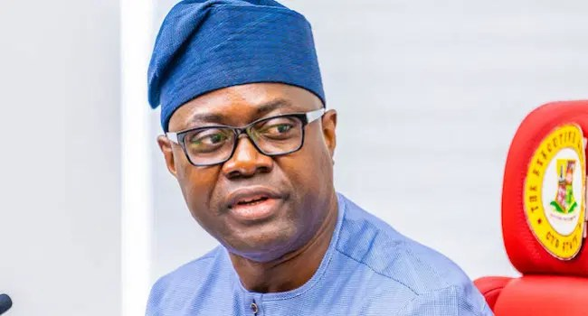

Atiku wanted me as running mate in 2023 – Makinde

Oyo State Governor Seyi Makinde says former Vice-President Atiku Abubakar approached him to be his running mate in the 2023 presidential election. Makinde said he declined because he had spent only three years as governor and felt he lacked enough experience in public service to take on the role. He discussed the offer and other aspects of his political career in an interview.
Makinde also spoke about the G5 governors’ opposition to Atiku’s 2023 bid and the continuing crisis in the Peoples Democratic Party. He said he was the only member of the G5 who had since left the party. He defended his faction’s decision to expel former Rivers State Governor Nyesom Wike, saying it was intended to enable the PDP to contest the election, even with a weakened structure. Makinde also questioned the state of democracy, citing disputes over the nullification of candidates less than 80 days before a national election.
Responding to claims by the Oyo State All Progressives Congress that he had neglected governance for political activity, Makinde said state administration was continuing. He pointed to his presentation of the 2027 budget estimates to the State House of Assembly and his state-of-the-state address. He also said his preferred successor, former commissioner Bimbo Adekanbi, should develop his own political identity, and rejected the description of himself as a political godfather.
On security, Makinde backed decentralised decision-making and state police, arguing that states should be able to tailor responses to local conditions. He said safeguards would be needed to address concerns that state policing could be used oppressively. Referring to kidnappings of pupils and teachers in Oyo and Borno states, he said Oyo had secured the release of those abducted, though the incident involved casualties. Makinde said a judicial panel had submitted its report on the Oyo incident and that a government white paper was due within the week.
Source: Vanguard